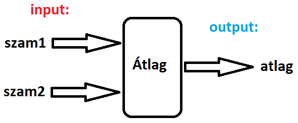
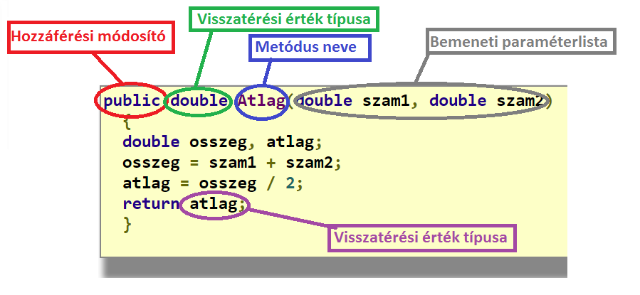

Metódusok(függvények)
Gyakran megesik, hogy egy program végrehajtásakor egy-egy tevékenységre többször is szükségünk van.
Célszerű lenne, ha az adott tevékenységet csak egyszer kódolnánk le, és utána az adott programrészt, résztevékenységet utána többször is elindíthatnánk, amikor arra szükség van.
Erre találták ki a függvényeket, amelyeket az objektumorientált nyelvezetben metódusoknak nevezünk.
A metódus (függvény) egy elkülönített programrész, ami saját névvel rendelkezik, és egy jól meghatározott feladatot lát el.
Ahhoz, hogy egy metódust használjunk,
- meg kell adnunk a metódus definícióját
- hívnuk kell a metódust, hogy a megírt kód végrehajtódjon
Egy tiikus függvénydefiníció szerkezete a következő:
<Hozzáférési módosító> <Visszatérési érték típusa> <Metódus neve>(Paraméterlista)
{
<utasítások>
}
- Hozzáférési módosító - ezel adjuk meg a metódus láthatóságát egy másik osztályból.
Leggyakoribb hozáférési módosítók:public, protected, private
- Visszatérési érték típusa - Egy metódus végrehajtásakor keletkezhet valamilyen számítási eredmény.
Ennek az eredménynek a típusát adja meg. Ez képezi a függvény kimeneti adtát(output). Ha nincs visszatérési érték, akkor ide void-ot írunk.
- Metódus neve - Ez egy azonosító, (függvénynév), amellyel a metódust hívjuk
- Paraméterlista - Ez egy lista, ami a metódus bemeneti értékeinek típusait, azonosítóit adja meg. Figyelj az adatok sorrendjére!
Lássunk egy példát függvényre!
public double Atlag(double szam1, double szam2)
{
double osszeg, atlag;
osszeg = szam1 + szam2;
atlag = osszeg / 2;
return atlag;
}
A függvényre tekinthetünk úgy is, mint egy gyártó egységre, amely a "nyersanyagból" (input adatok) legyártja a "végterméket" (output adat).
A bemenő adatokat a függvény paraméterlistájába soroljuk fel, a kimenő adat a return utáni változó vagy kifejezés.

A függvény tehát egy kisebb program, ami a nayobb programunk része. Tartalmazhat saját változókat (osszeg, atlag)
Ezekkel a változókkal és bemeneti adatokkal elvégezünk valamilyen számítást, az eredményt pedig a return kulcszó után adjuk meg.

Az így elkészült függvényt aztán a programunk egy másik részében meghívhatjuk, vagyis felhasználhatjuk két szám átlagának kiszámításásra:
...
double x1 = Atlag(2,3); //x1 értéke 2.5 lesz
double y2 = Atlag(10,3); //y2 értéke 6.5 lesz
...stb.
A függvény nyújtotta nagy előny, hogy ha már egyszer megírtuk, utána akárhányszor hívhatjuk.
Léteznek olyan függvények, amelyek nem adnak vissza semmilyen számítási eredményt, hanem egyszerűen elvégeznek valamilyen tevékenységet. Az ilyen függvények visszatérési értéke void
Lássunk egy példát:
public void Koszones(string kinek)
{
Console.WriteLine("Szia, "+kinek +"!");
}
//hívás pl. a főprogramban:
Koszones("Dani"); //kimenet: Szia, Dani!
Koszones("Tibi"); //kimenet: Szia, Tibi!
Figyeljük meg, hogy itt nincs return a függvény végén!
Léteznek továbbá olyan metódusok is, amelyeknek üres a paraméterlistájuk, vagyis nincsenek bemeneti adatai:
Az ilyen esetekben a metódusnév után üres kerek zárójelpárral jelezzük, hogy függvényről van szó. Példa:
public void Kiir10csillagot()
{
Console.WriteLine("**********");
}
//hívás pl. a főprogramban:
Kiir10csillagot();
Végül nézzük meg, hogyan illeszkednek ezek a függvények a főprogramba!
using System;
public class Program
{
public static double Atlag(double szam1, double szam2)
{
double osszeg, atlag;
osszeg = szam1 + szam2;
atlag = osszeg / 2;
return atlag;
}
public static void Koszones(string kinek)
{
Console.WriteLine("Szia, "+kinek +"!");
}
public static void Kiir10csillagot()
{
Console.WriteLine("**********");
}
static void Main()
{
double x1 = Atlag(8, 7);//metódushívás
Console.WriteLine("x1 = "+ x1);
Koszones("Feri");//metódushívás
Kiir10csillagot();
}
}
A kimenet:
x1 = 7,5
Szia, Feri!
**********
Itt a metódusokat a Program osztályon belül definiáltuk. Mivel ez az osztály statikus, ezért minden metódusa statikus lesz.
Ezért a metódusok neve elé a static kulcsszót tesszük.
Ennek a magyarázatát a későbbiekben, az osztályok tárgyalásakor fogjuk megadni.
Vegyük észre, hogy a Main() is tulajdonképpen egy metódus!
Annyiban kitüntetett a többi metódushoz képest, hogy ez a metódus hívás nélkül is végrehajtódik. Sőt, ez lesz az első a metódusok sorában, ami végrehajtásra kerül.
A metódusokat a Program osztályon belül tetszőleges sorrendben pakolgathatjuk, és mindegyik metódus(a Main()-t kivéve hívhatja a másikat.
Például a Koszones metódusban hívhatjuk a Kiir10csillagot metódust vagy fordítva.
Egy másik, szokásos elrendezésben a Main() metódus van elől, utána a többi metódus:
using System;
public class Program
{
static void Main()
{
double x1 = Atlag(8, 7);//metódushívás
Console.WriteLine("x1 = "+ x1);
Koszones("Feri");//metódushívás
Kiir10csillagot();
}
public static double Atlag(double szam1, double szam2)
{
double osszeg, atlag;
osszeg = szam1 + szam2;
atlag = osszeg / 2;
return atlag;
}
public static void Koszones(string kinek)
{
Console.WriteLine("Szia, "+kinek +"!");
}
public static void Kiir10csillagot()
{
Console.WriteLine("**********");
}
}
A kimenet ugyanaz:
x1 = 7,5
Szia, Feri!
**********